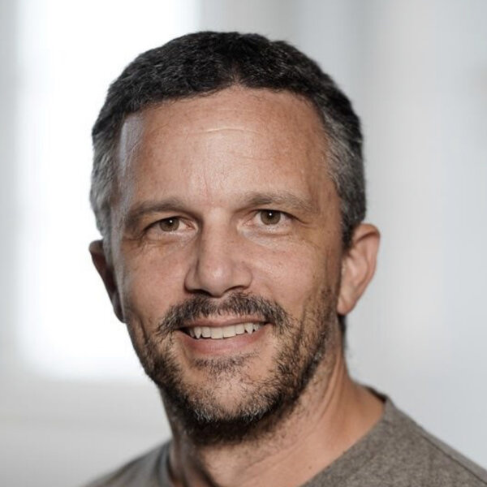

CDEL · ECCV 26
Overview
Call for Papers
Dates
Speakers
Schedule
Organizers
ICCV 2025 ↗
Program
Schedule.
Wednesday 9 September 2026 · Malmö, Sweden.
Workshop room
Malmö Arena, Panorama 2
Poster session
MalmöMässan Exhibit Hall
All times
CEST (UTC+2)
08:15 — 09:00
Invited talk
Despoina Paschalidou
NVIDIA
Remote
09:00 — 09:45
Invited talk
Yuki M. Asano
University of Technology Nuremberg
09:45 — 10:15
Oral session I
Bootstrapping a 4D LiDAR Annotation Tool from Video Foundation Models
Jihun Kim
AGT-CV: An Aerial-Ground Team Cross-View Dataset for Heterogeneous Robot Teams in Unstructured Environments
Knut Peterson
10:15 — 11:00
Invited talk
Matthias Nießner
Technical University of Munich
11:00 — 12:30
Poster session
Boards 261–311 · All accepted papers
12:30 — 13:30
Lunch
13:30 — 14:15
Invited talk
Jaemin Cho
Johns Hopkins University
14:15 — 15:00
Oral session II
BabyLand-72: Synthetic-to-Real Multi-View Infant Facial Landmark Estimation
José Carlos Reyes Hernández
Diffuse the Object, Keep Its Label: Curating Detector Training Data from a Few Unlabeled Photographs via VLM-Built 3D Vegetation Scenes
Mario Malizia
Speed-Variation Distillation for Generative Modeling
Sukit Seripanitkarn
15:00 — 15:45
Invited talk
Andrew Ilyas
Carnegie Mellon University
Remote
15:45 — 16:00
Coffee break
16:00 — 16:45

Invited talk
Serge Belongie
University of Copenhagen
16:45 — 17:30
Invited talk · Closing speaker
Yunzhu Li
Columbia University
Remote
17:30 — 17:40
Closing remarks